Explore
Approved application · approved logoEvery image below is an actual canonical PNG. Open an image for its full resolution. These are authored design scenes, not current-app browser captures.
Graph · loading
graph-loadingActions and implementation pointers
+ New page · Journal · Explore · All pages · ⌄ · Reflections · › · Reading · Ask Journl · Today’s Journal · Close · Instant · Thinking · ✓ Unlinked notes · All notes · ✓ Newest first · Oldest first
apps/web/src/app/(app)/explore/_components/explore-overview.tsxapps/web/src/app/(app)/explore/_components/cluster-items.tsxapps/web/src/app/(app)/explore/_components/source-contexts.tsxapps/web/src/app/(app)/graph/_components/graph-explorer.tsx

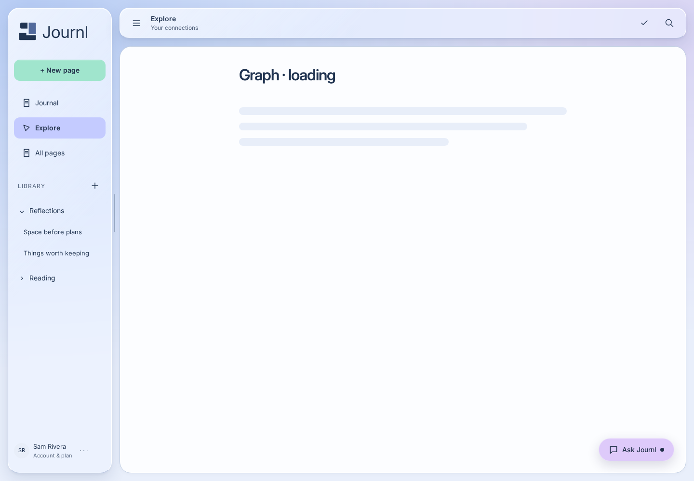
SHA256 7ef967b581cf4927bbb4487c346cd07877673afd4006ac8ad900f659bcabee06

SHA256 d45d5349013cc482d3654105fc084eca696952ec88bd27c44e23948fda87070f

SHA256 7515c4307da764187e39bce2e3d87d24e400824418e96a792dfaa51f831996f5

SHA256 3df6fc86097c5ddefa01b49e5e2f4e207c07c9e189013e0fbf93d2ea2cffc962
Graph · error
graph-errorActions and implementation pointers
+ New page · Journal · Explore · All pages · ⌄ · Reflections · › · Reading · Retry · Ask Journl · Today’s Journal · Close · Instant · Thinking · ✓ Unlinked notes · All notes · ✓ Newest first · Oldest first
apps/web/src/app/(app)/explore/_components/explore-overview.tsxapps/web/src/app/(app)/explore/_components/cluster-items.tsxapps/web/src/app/(app)/explore/_components/source-contexts.tsxapps/web/src/app/(app)/graph/_components/graph-explorer.tsx

SHA256 152bda11bf1a9e341565c1ce198f3ea42ed7892bffc936458c83edee074d3932

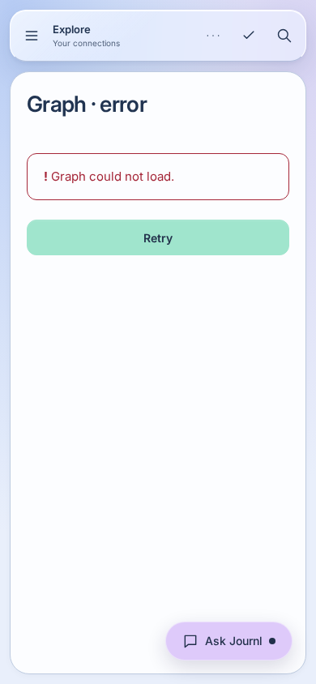
SHA256 4fab2810b235d5bc816173be672ef0d0e653381b6bf85ffd09b00b8aa2f53952

SHA256 aa9cb9c2122a6c073bda17b3f39bbc117fc120073ca51b7b2e7f230b3fc34384

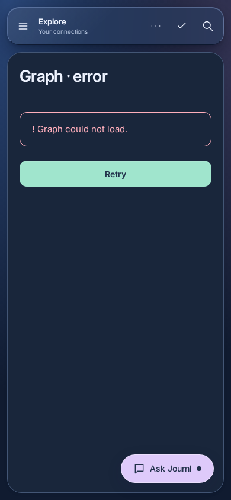
SHA256 732093ff617257194701ac6c175f497157b523e27847a991f23cc637b14eb261
Graph · empty
graph-emptyActions and implementation pointers
+ New page · Journal · Explore · All pages · ⌄ · Reflections · › · Reading · Ask Journl · Today’s Journal · Close · Instant · Thinking · ✓ Unlinked notes · All notes · ✓ Newest first · Oldest first
apps/web/src/app/(app)/explore/_components/explore-overview.tsxapps/web/src/app/(app)/explore/_components/cluster-items.tsxapps/web/src/app/(app)/explore/_components/source-contexts.tsxapps/web/src/app/(app)/graph/_components/graph-explorer.tsx

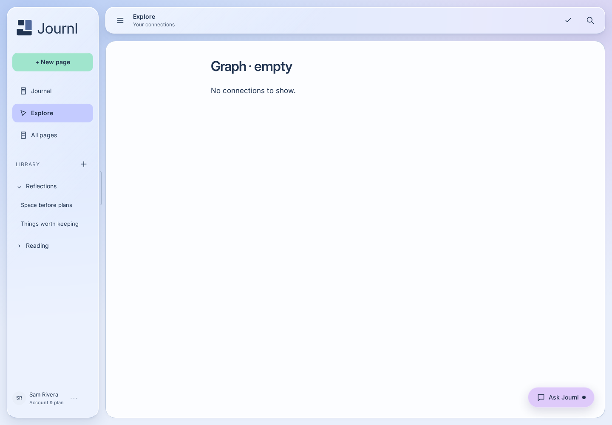
SHA256 96722e99bbd8d6c3c9dbf7c69ba03120b7cd2d949e251be1f762c1df59c556f2

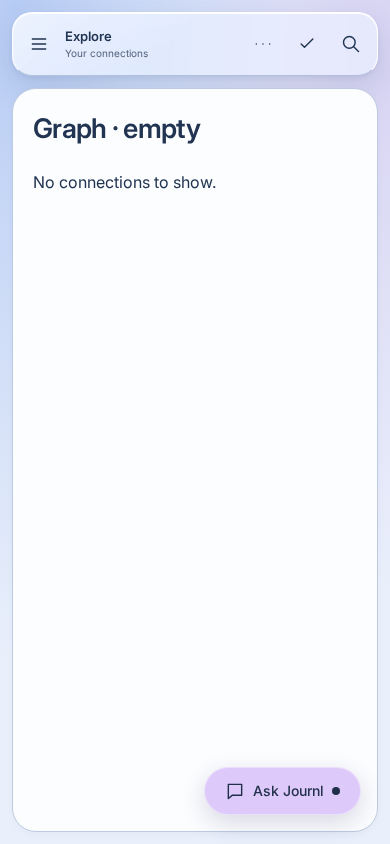
SHA256 593b50093addb94f2c9111028f0618a2d5bf13884da99faa246f79961ed598ab

SHA256 ec6e78213e410e6f7c3566abb80fe27185876fb693886211c617d9de6ba154b5

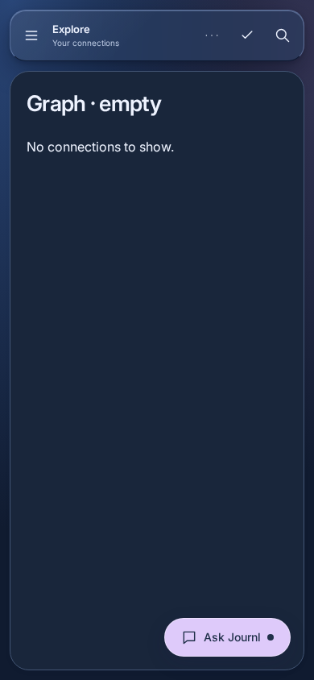
SHA256 9232aa3733cd70db1d17e67be22f27566e727bc03fd2999d0e602592081472da
Graph · expand
graph-expandActions and implementation pointers
+ New page · Journal · Explore · All pages · ⌄ · Reflections · › · Reading · Expand connections · Load more · Ask Journl · Today’s Journal · Close · Instant · Thinking · ✓ Unlinked notes · All notes · ✓ Newest first · Oldest first
apps/web/src/app/(app)/explore/_components/explore-overview.tsxapps/web/src/app/(app)/explore/_components/cluster-items.tsxapps/web/src/app/(app)/explore/_components/source-contexts.tsxapps/web/src/app/(app)/graph/_components/graph-explorer.tsx

SHA256 96d4e84ecd89a6ec4089879ed13b7b20ce33b49e2a19f9675990b0966de9a6ed

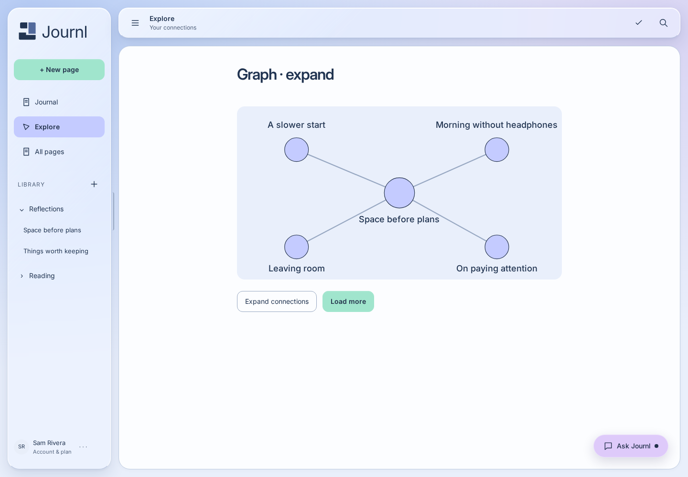
SHA256 94a8eec97899e5b060db15f55d5e8a05a4fb29f0c72d8385aa3e1cea59b0ec29

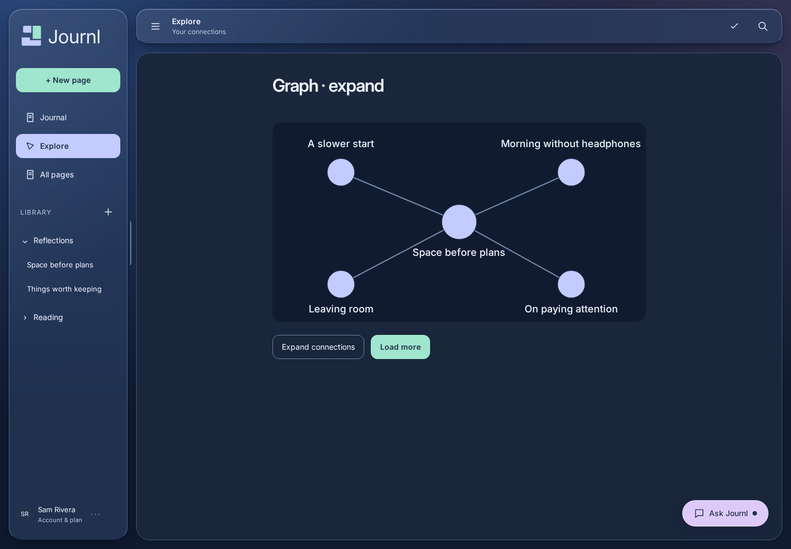
SHA256 1fcbbe8fd067e6a844feafddaca0b69801e2f90e8a31e189016aeef8518cd257

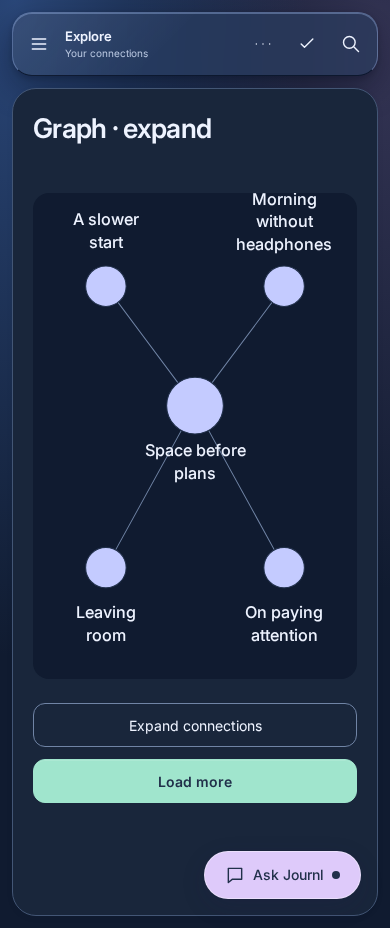
SHA256 50720bab3b31a4f2b1f9424d9ee29adec8711bec3cdf22a842535af90acd8a07
Graph · traversal
graph-traversalActions and implementation pointers
+ New page · Journal · Explore · All pages · ⌄ · Reflections · › · Reading · Back · Explore further · Ask Journl · Today’s Journal · Close · Instant · Thinking · ✓ Unlinked notes · All notes · ✓ Newest first · Oldest first
apps/web/src/app/(app)/explore/_components/explore-overview.tsxapps/web/src/app/(app)/explore/_components/cluster-items.tsxapps/web/src/app/(app)/explore/_components/source-contexts.tsxapps/web/src/app/(app)/graph/_components/graph-explorer.tsx

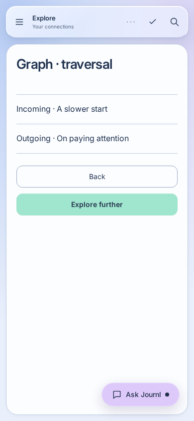
SHA256 87b3ef328d12f773ddb2fa496bc3a79135065ff18887c77c9c889eb79b938601

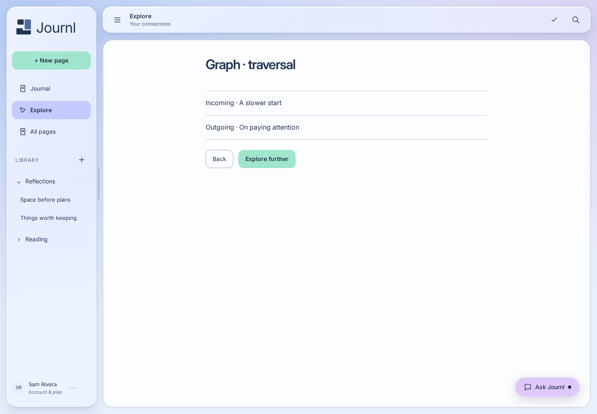
SHA256 b937c6c2a8f2a30e86b5dce6078e1a58bcc531431b154aa294a7e8b8c28c6683

SHA256 93198c262e933bc69ddd286c6a5426f6d3808844c34a98e6823d454c16c2ce21

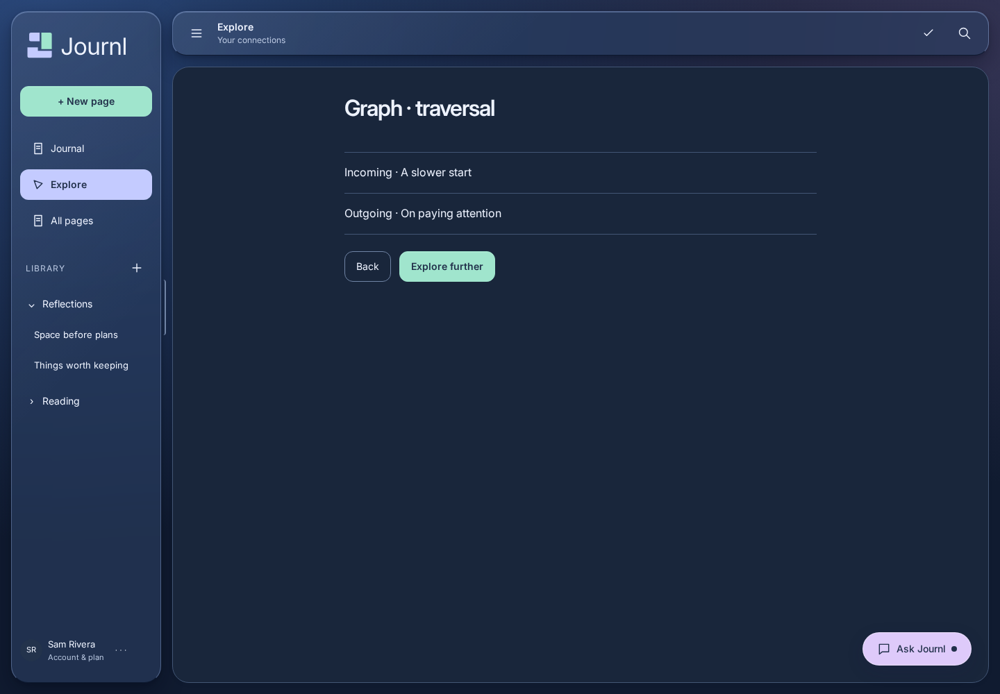
SHA256 2f1a2a521f0b4526f3dd8705a91bbb70bb785ffcf8c006c742804d2c619a76b8
Graph · preview-loading
graph-preview-loadingActions and implementation pointers
+ New page · Journal · Explore · All pages · ⌄ · Reflections · › · Reading · Ask Journl · Today’s Journal · Close · Instant · Thinking · ✓ Unlinked notes · All notes · ✓ Newest first · Oldest first
apps/web/src/app/(app)/explore/_components/explore-overview.tsxapps/web/src/app/(app)/explore/_components/cluster-items.tsxapps/web/src/app/(app)/explore/_components/source-contexts.tsxapps/web/src/app/(app)/graph/_components/graph-explorer.tsx

SHA256 f7222da66e4d1e8f14c0ca9af28b92e8269dc602019b83985bc5e6f1132fd9b1

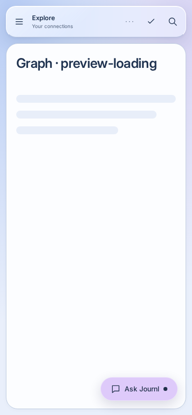
SHA256 fe8b17a1cae40f92cf0575cfe12bb52bf061910211805a55806a38313ef8ea3b

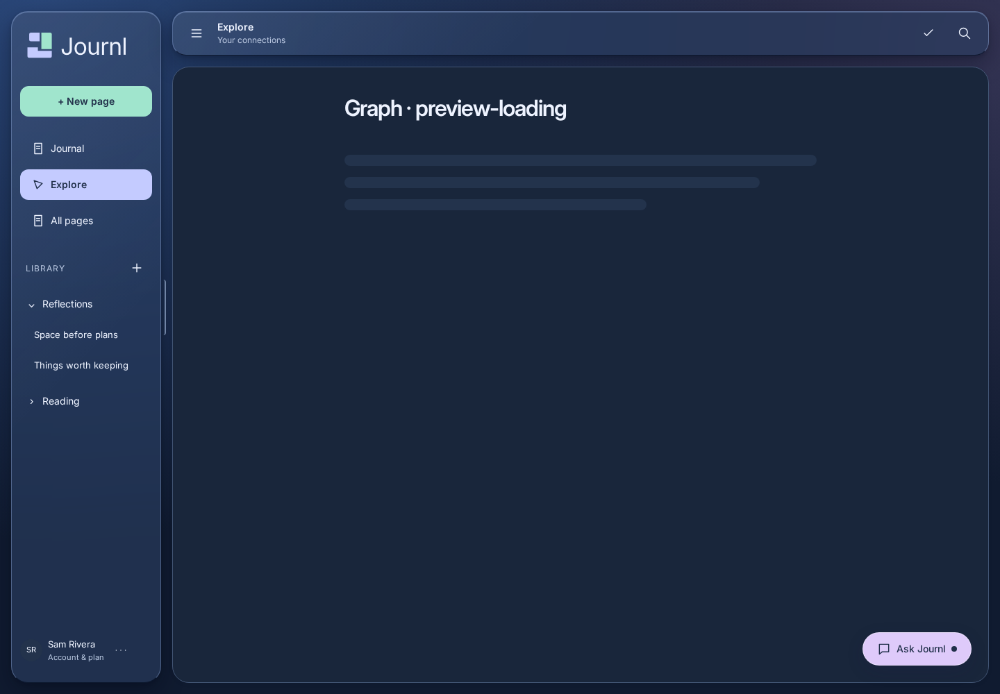
SHA256 4f5a96792b5a5d094e4c33e27ce28ef849f72859af35fc21b254fecfb7200639

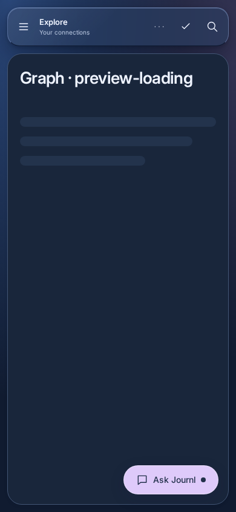
SHA256 24dd0df86a3cdda56cec5353cc8c2e785901224d78dead949b4447bf1f6b8908
Graph · preview-error
graph-preview-errorActions and implementation pointers
+ New page · Journal · Explore · All pages · ⌄ · Reflections · › · Reading · Close preview · Ask Journl · Today’s Journal · Close · Instant · Thinking · ✓ Unlinked notes · All notes · ✓ Newest first · Oldest first
apps/web/src/app/(app)/explore/_components/explore-overview.tsxapps/web/src/app/(app)/explore/_components/cluster-items.tsxapps/web/src/app/(app)/explore/_components/source-contexts.tsxapps/web/src/app/(app)/graph/_components/graph-explorer.tsx

SHA256 0cb27a7e31c815a03477149a58e0173ee9265a0b019ceca028b71141eb925f2a

SHA256 826b46c6a08dc9395bea029ebfa968d28e555f37727238a441397148c152a41c

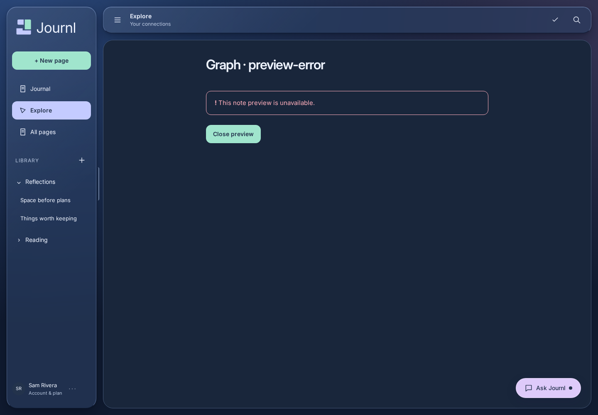
SHA256 2679129f9c134d67ce5f56a8d28b0f4dde9ed5c4c022b78e76e5809081f5d8d9

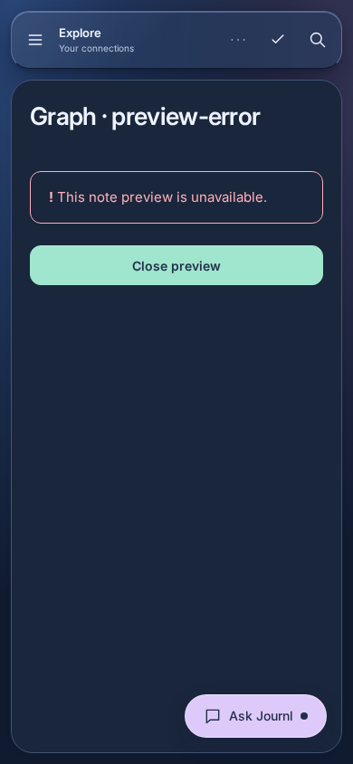
SHA256 876f6c5b8de6a520418b65ae9421db20df973b519c77faee5a6104803582c39f